方向性を確認していただくための、静止画をつなぎ合わせたイメージです。画像・ロゴ・キャッチコピー・講師と生徒の人物は仮のもので、本制作では差し替え・動画化します。
| C01 4秒 | 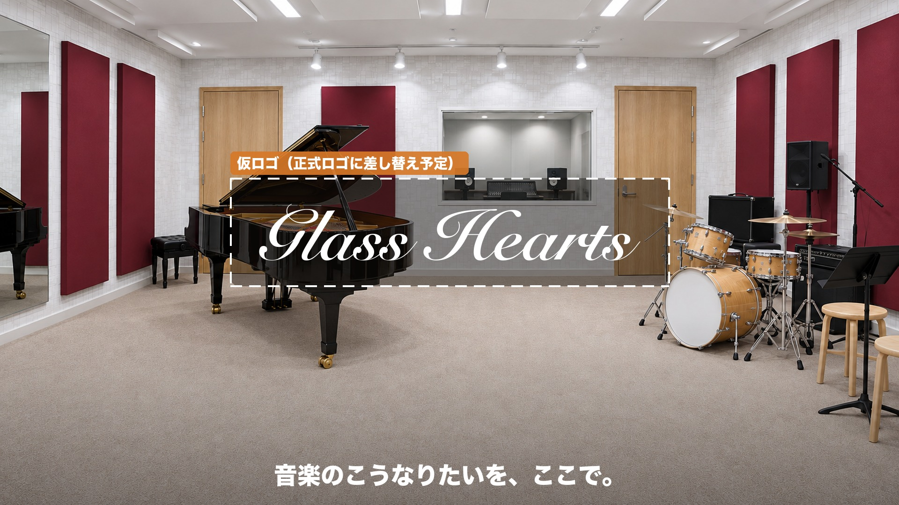 | オープニング。仮のロゴとキャッチコピー（正式なものに差し替え予定） 音楽のこうなりたいを、ここで。 |
| C02 4秒 | 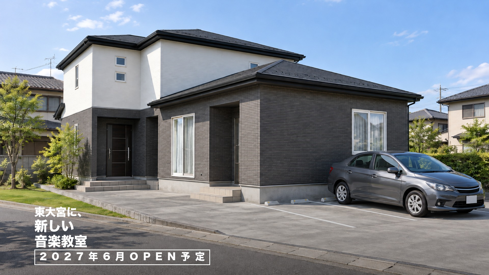 | 外観と駐車場（図面・パースに合わせたイメージ） 東大宮に、／新しい／音楽教室／2027年6月OPEN予定 |
| C03 4秒 | 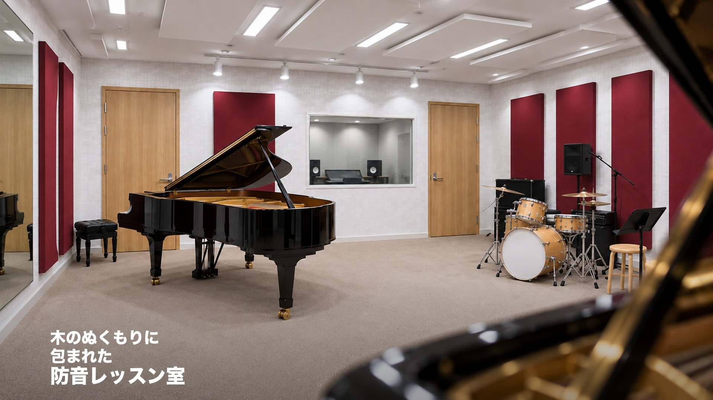 | 教室の全景（図面に合わせたイメージ。壁・パネルの色は仮） 木のぬくもりに／包まれた／防音レッスン室 |
| C04 5秒 | 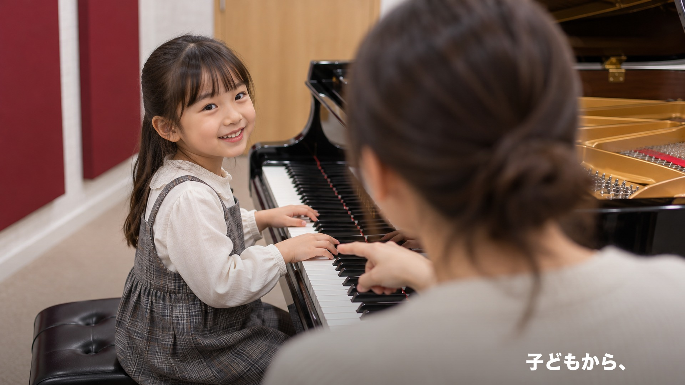 | ピアノのレッスン（講師・生徒は仮のイメージ） 子どもから、 |
| C05 4秒 | 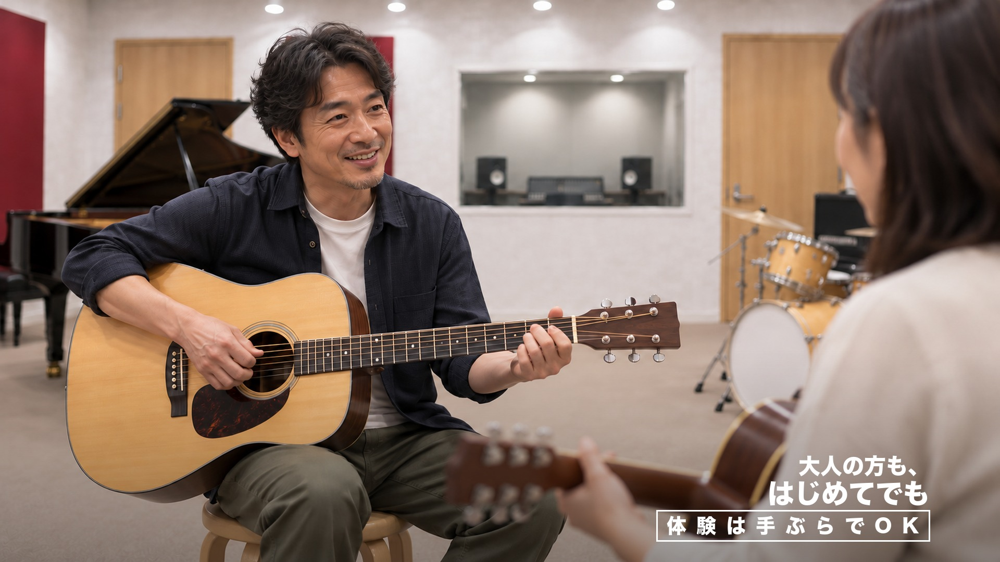 | ギターのレッスン（講師・生徒は仮のイメージ） 大人の方も、／はじめてでも／体験は手ぶらでOK |
| C06 4秒 | 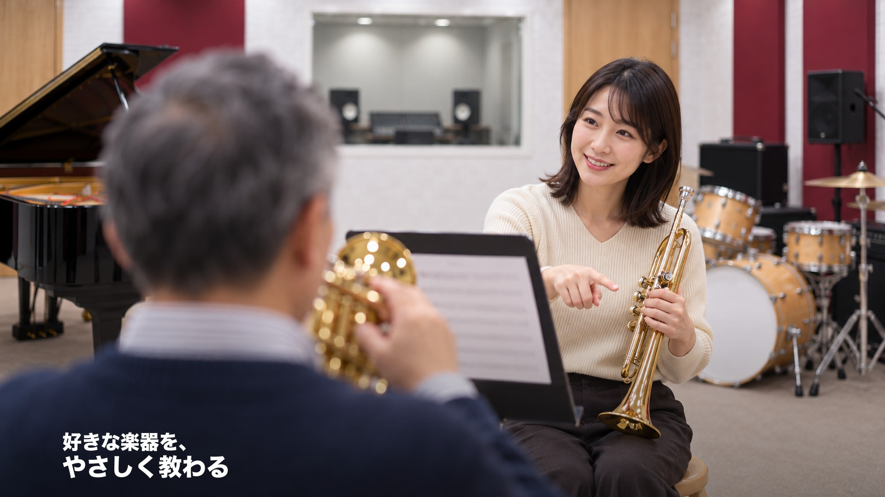 | トランペットのレッスン（講師・生徒は仮のイメージ） 好きな楽器を、／やさしく教わる |
| C07 5秒 | 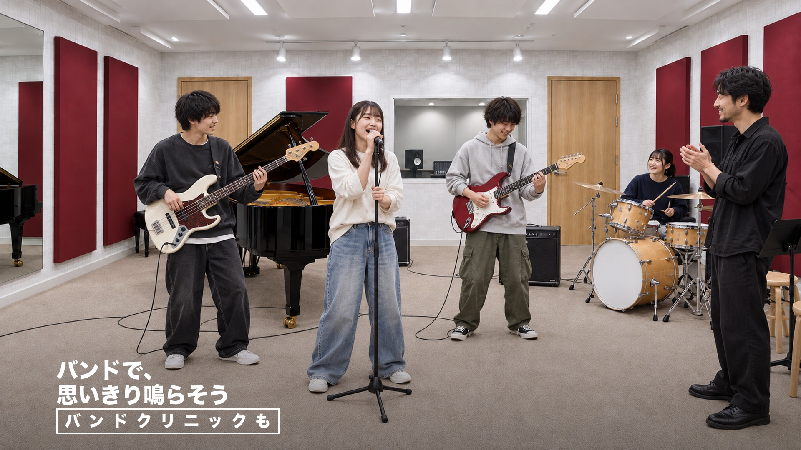 | バンドクリニック（講師・生徒は仮のイメージ） バンドで、／思いきり鳴らそう／バンドクリニックも |
| C08 4秒 | 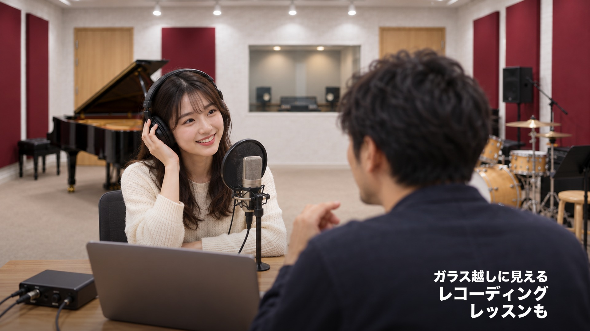 | 教室でのレコーディングレッスン ガラス越しに見える／レコーディング／レッスンも |
| C09 4秒 | 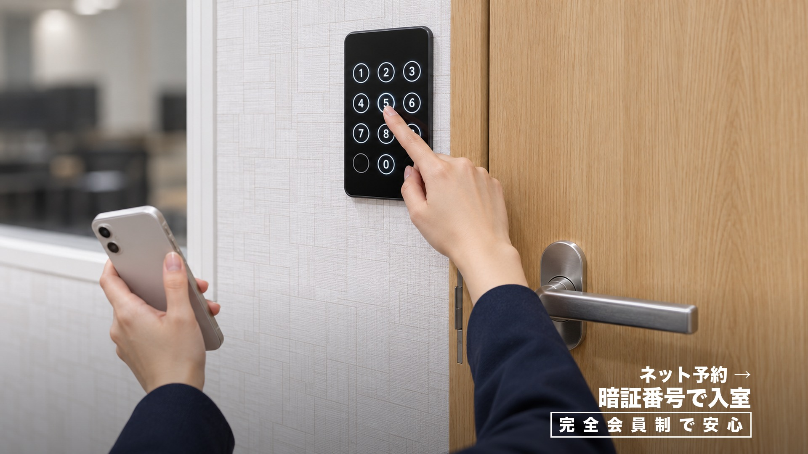 | ネット予約と、暗証番号での入室 ネット予約 →／暗証番号で入室／完全会員制で安心 |
| C10 3秒 | 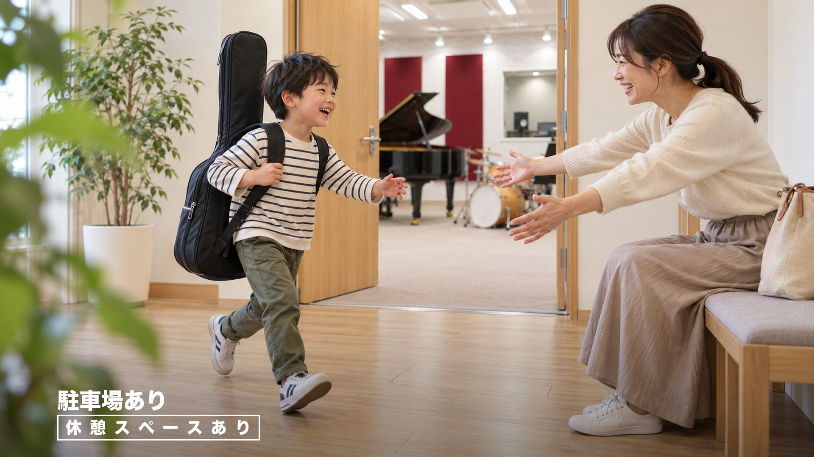 | 玄関ホールの休憩スペース（場所は仮） 駐車場あり／休憩スペースあり |
| C11 4秒 | 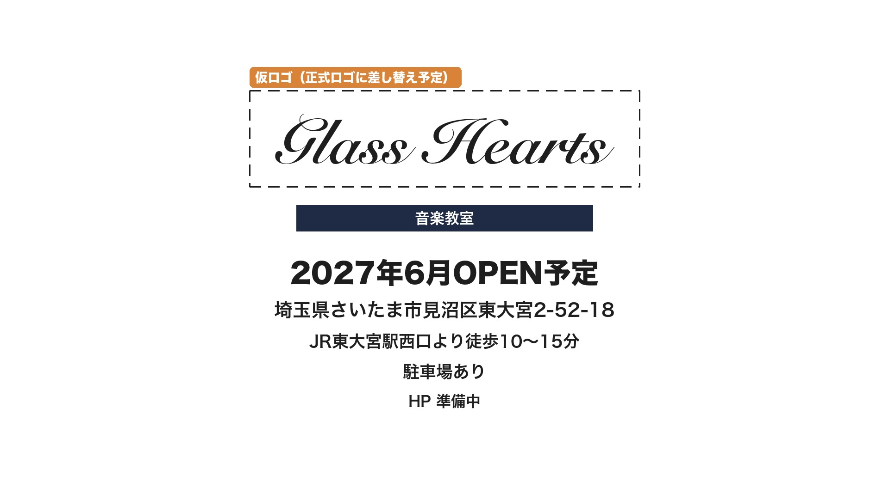 | エンドカード（ロゴ・HPは差し替え・追記予定） 音楽教室 Glass Hearts／2027年6月OPEN予定／住所・アクセス／駐車場あり／HP 準備中 |